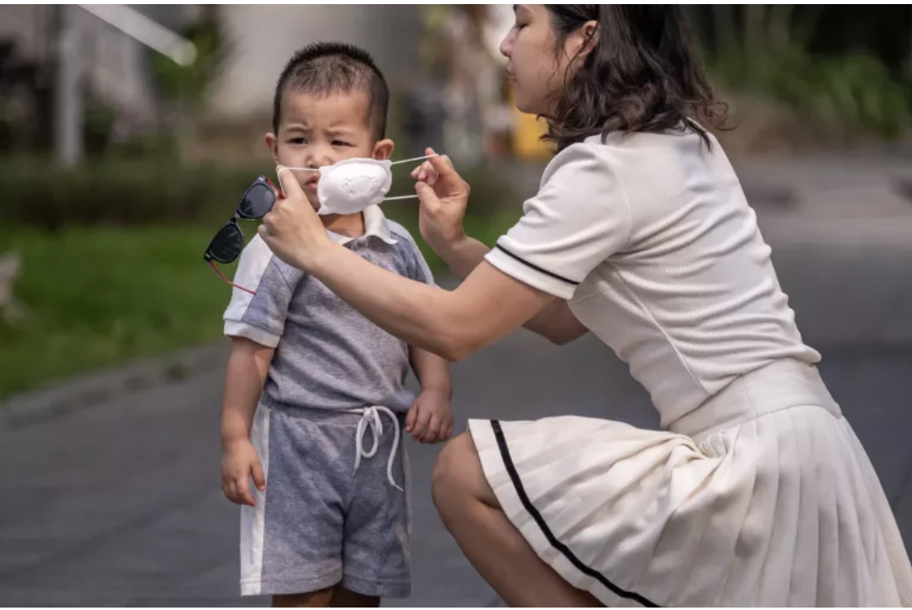

Заявление регионального директора ЮНИСЕФ по Ближнему Востоку и Северной Африке Эдуарда Бегбедера о жертвах среди детей на Западном берегу
АММАН, 12 февраля 2025 года – “Насилие, связанное с конфликтом,
продолжает приносить смерть и страх гражданскому населению,
включая женщин и детей, на Западном берегу.
7 февраля 10-летний палестинский мальчик скончался от полученных
ранений после того, как, по сообщениям, был застрелен, а два дня
спустя в результате другого трагического события в лагере Нур-Шамс,
по сообщениям, была застрелена восьмимесячная беременная женщина
вместе со своим нерожденным ребенком.
“За первые два месяца 2025 года на Западном берегу было убито
в общей сложности 13 палестинских детей. Это число включает
семерых детей, убитых с 19 января, после начала крупномасштабной
операции на севере территории. Среди пострадавших - ребенок двух
с половиной лет, беременная мать которого также была ранена в
результате стрельбы."
“С 7 октября 2023 года на Западном берегу, включая Восточный Иерусалим,
были убиты 195 палестинских детей и трое израильских детей.
За последние 16 лет число палестинских детей, убитых на территории,
увеличилось на 200 процентов.
Сделайте пожертвование
Ваше пожертвование поможет тем, кто в этом нуждается. Выберите сумму и метод оплаты.